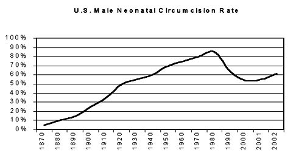
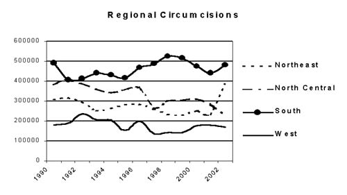
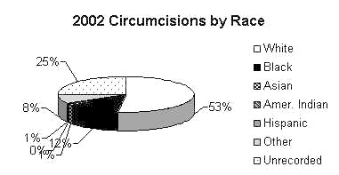

Normal
versus Circumcised:
U.S. Neonatal Male Genital Ratio
By Dan Bollinger, © 2004 Revised: February, 2004
Interest in the human rights, genital integrity issue continues to grow and trustworthy statistics are necessary for an informed debate. The American Academy of Pediatrics complained that statistics being cited are outdated and inaccurate. The goal of this paper is to provide recent and accurate statistics for that discussion. This white paper addresses United States neonatal male circumcisions performed in hospitals.
| Source Data: According to the U.S. Census Bureau the most accurate figures for live births is the National Center for Health Statistics (NCHS). Live births and male births from 1990-2002 are from the annual NCHS reports including the recent Births: Final Data for 2000(100% samplings). The NCHS tracks the sex ratio; in recent years it has been 1047 males for every 1000 females born live, or 51.15%. This figure has changed little in the past 50 years and is used to calculate male births for years 1990-1997. The number of circumcisions is from health care analysts Solucient who compiled an Inpatient View report (33% samplings) on annual male neonate circumcisions performed in hospitals between 1990 and 2002. Cancer rates are from the Center for Disease Control. |
SCOPE Neonatal circumcisions account for 99.3% of U.S. circumcisions. Adult men rarely opt for the procedure. It is the most often performed surgery in the U.S.A. Hospital circumcisions account for an estimated 99% of U.S. circumcisions.
|
Year |
Circumcisions |
% Change |
Live Births |
Male Births |
% Intact |
% Circumcised |
|
2002 |
1,261,563 |
10.9% |
4,019,280 |
2055862 |
38.6% |
61.4% |
|
2001 |
1,137,654 |
-6.3% |
4,040,121 |
2066522 |
44.9% |
55.1% |
|
2000 |
1,214,312 |
1.9% |
4,058,814 |
2076969 |
41.5% |
58.5% |
|
1999 |
1,191,733 |
-1.1% |
N/A |
2026854 |
41.2% |
58.8% |
|
1998 |
1,204,431 |
5.0% |
N/A |
2106205 |
42.8% |
57.2% |
|
1997 |
1,146,839 |
-12.9% |
3,880,894 |
1985077 |
42.2% |
57.8% |
|
1996 |
1,317,422 |
9.5% |
3,891,494 |
1990499 |
33.8% |
66.2% |
|
1995 |
1,203,223 |
-3.0% |
3,899,589 |
1994640 |
39.7% |
60.3% |
|
1994 |
1,240,572 |
-1.3% |
3,952,767 |
2021840 |
38.6% |
61.4% |
|
1993 |
1,257,461 |
-5.8% |
4,000,240 |
2046123 |
38.5% |
61.5% |
|
1992 |
1,334,742 |
0.9% |
4,065,014 |
2079255 |
35.8% |
64.2% |
|
1991 |
1,323,189 |
-2.6% |
4,110,907 |
2102729 |
37.1% |
62.9% |
|
1990 |
1,358,218 |
N/A |
4,158,212 |
2126925 |
36.1% |
63.9% |
HISTORICAL The only historical compilation of circumcision rates is Edward Wallerstein's Circumcision: An American Health Fallacy. His statistics are estimates for the years 1870 (the year circumcision was introduced to the United States) through 1979. In 1979 popularity of circumcision reached a record high in the United States at 85%; a number Wallerstein says is conservative. Since then the rate has decreased. This graph combines Wallerstein estimates with the above calculated rates.

INTACT RATE The intact rate for 2002 is 38.6%. The last time the rate was this high was around 1945. In 1979 an estimated 15% of boys retained their normal penis. The intact rate has increased almost three-fold since then. The number of circumcisions for 2002 increased 10.9% from the previous year.
MEDICALIZATION The medicalization of ritual circumcision is a phenomenon unique to English speaking countries. Originating in the United Kingdom, it spread to the United States, Canada, Australia and New Zealand. Since then, the rates have plummeted in all these countries except the United States, which still circumcises most of its boys. In the United Kingdom, where infant circumcisions rarely occur, the circumcision rate is 0.41% for boys under one-year-old. No scientific experiment has ever proven any of the claimed benefits of prophylactic circumcision.
NON-THERAPEUTIC Circumcision in the neonatal period is contraindicated. Its risks exceed its benefits, if any. The American Academy of Pediatricians concluded: "There is no absolute medical indication for routine circumcision of the newborn." The American Medical Association, American Cancer Society, and American College of Obstetricians and Gynecologists concur.
REGIONAL VARIATIONS The number of circumcisions varies by region. Over the past ten years numbers in the Northeast and North Central regions have generally dropped while the South region have risen, rates in the West have remainded at about the same, low leve. However, for some inexplicable reason, this year rates in the Northeast region increased.

COST There are conflicting reports of the true cost of neonatal circumcisions. Medicaid paid at least $35 million for circumcision in 1999. The AAP estimates that circumcision costs $150-270 million annually, not including complications. The additional cost of an extra 1/2 day hospital stay, on average, is estimated to be well over $200 million annually.
MORBIDITY Deaths from circumcision and its complications are estimated at 229 per year based on a ratio from a British study. There are about 178 times the number of circumcision deaths than schoolyard violent deaths each year.
RACIAL VARIATIONS Racial make-up of patients changed over the past ten years. White rates are down 38%. Black rates are down 33%. Asian rates are up 130%. American Indian rates are up 263% and Hispanic rates are down 21%.

CANCER The prostate cancer rate is 160 per 100,000. Sometimes a man's foreskin is used for reconstructive surgery. An earlier non-therapeutic circumcision would eliminate this option.
| If the
purpose is to reduce: |
Circumcision may prevent: |
If the circumcisions number: |
With subsequent
circumcision complications reaching: |
Including estimated
infant deaths of: |
| Testis Cancer | 0 to 5.3 deaths | 100,000 | 1000 cases | 18 |
| Penile Cancer | 0 to 1 deaths | 100,000 | 1000 cases | 18 |
FEMALE CIRCUMCISION No female circumcisions have been performed in U.S. hospitals since 1991 when 8 surgeries were performed. It is illegal to circumcise females in the U.S. except to treat a diagnosed medical condition.
REASONS Prophylactic medical benefits, hygiene, and culture are often given as the reason to circumcise, the same reasons most often given for female genital mutilation.
This report will be updated annually as data becomes available. Dan Bollinger is an independent men's studies researcher. He resides in West Lafayette, Indiana.
Certain data used in this study were supplied by Solucient, LLC, Evanston, Illinois. Any analysis, interpretation, or conclusion based on these data is solely that of the authors, and not Solucient.
http://www.cirp.org/library/statistics/bollinger2004/